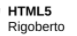

Liked by 4GeeksAcademy, html5, Web and 100,000 others.
If you have a cat, there’s a good chance your camera roll is already full of photos of your furry feline. But that doesn’t mean there’s no room for a few more. And just like cat photos, there’s also always room for a cat quote or two. There’s an endless amount of reasons that you might need this complete guide on cat quotes. Maybe you’ve taken dozens of photos of your furry best friend and you’re looking for that perfect Instagram caption. #CatLover